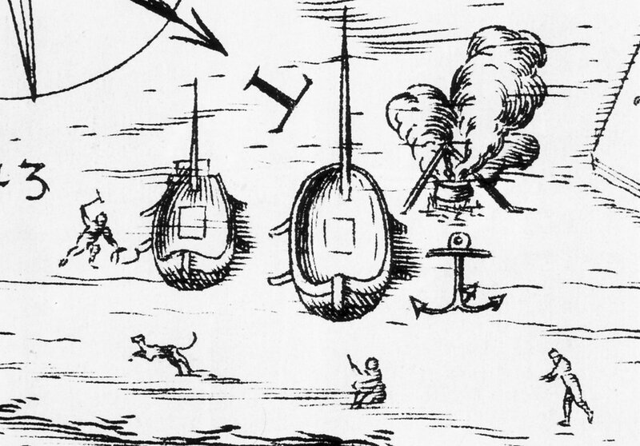
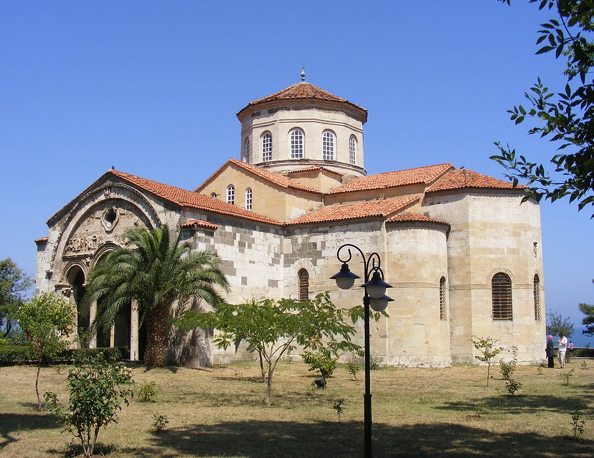
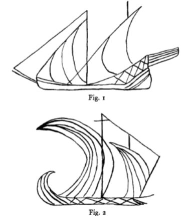

Мы увлеклись историей бригантины и ее родственников и почти забыли, что темой нашего рассказа являются типы кораблей, которые в разные периоды истории строились на верфях Генуи. Самое время вернуться к нашему списку.

Работа конопатчиков на верфи в Савоне. Фрагмент Plan de Savone dû à Orazio Grassi (vers 1625)
Bucio (1186-1280).
Если этот корабль и известен нашему широкому читателю, то лишь как прототип знаменитого венецианского бучинторо или буцентавра, церемониальной галеры, на которой дож Венеции совершал обряд обручения с морем. Лишь в конце средних веков название этого корабля латинизировали и подогнали к имени мифического греческого полубыка-получеловека, буцентавра; а в более ранние годы его значение было значительно проще: позолоченный бучио (bucio-in-oro).
Нам немногое известно об этом корабле.
Первый свет на него пролил, пожалуй Огюстен Жаль, который в 1841 году в ахиве Генуи нашел контракт на постройку bucius.
« In hunc modum conuenerunt Joannes de Guiliano et Pontius Michael de Niza, videlicet quod Joannes debet facere cum suo lignamine et dispendio pro l. 100 vnum Bucium lungum 40 godis et amplum in piano palmis12 et plus, et in buca palmis 17, et calcatum et pegatum et sartiatum et completum de sartia, lignaminis, exeeptis remis, et liberare eum Poncio vel ejus misso. »
Actum Janue, 11 feb. 1190; Ms. Arch. des not. de Gènes.
Из текста этого контракта мы видим, таким образом, что bucius – это гребной корабль с размерениями, сходными с тогдашними «длинными кораблями», галерами. Отношение его длины к ширине составляло 7:1. Наибольшая его ширина составляла всего 17 пальм (1 пальм равняется 9 французским дюймам или ок. 24 см) или приблизительно четырем с небольшим метрам, в то время как длина по килю – немного больше 29 м (40 года). Если сравним эти размеры с размерами венецианских галер XVI века, то мы не обнаружим больших расхождений между ними. Не различалась кардинально и форма корпуса: разница между наибольшей шириной корабля и шириной его плоской нижней части не превышала одного метра. Так какие же отличия имелись между бучио и галерой? Annales de Gênes за 1204 год содержат следующий любопытный пассаж:
Contigit quod quadam die mensis septembres Sagittea una Pisanorum centum remorum cum Bucio uno octuaginta remorum venit de partibus de infra mare…
В один из дней сентября пизанская стовесельная саэтта с восьмидесятивесельным бучио пришли со стороны открытого моря…
Пизанская саэтта и бучио, о которых говорится в этом отрывке, как полагает О.Жаль, имели расположение весел в два яруса, как на дромонах IX века, иначе трудно представить себе как можно разместить 40-50 весел по каждому борту при тогдашнем уровне кораблестроения. Известно, что расстояние между уключинами на гребных кораблях той эпохи равнялось 1 м 21 см. Тогда только для размещения 50 гребцов требовалась палуба длиной 62,5 метров, что при небольшой ширине корпуса гребных кораблей невозможно было обеспечить по соображениям продольной прочности корпуса. Впрочем, я бы не был так категоричен относительно расположения весел на этих кораблях. В начале темы о галерах Генуи мы писали, что генуэзские галеры представляли собой копию византийского дромона, т.е. были биремами с двумя рядами гребцов, расположенными один над другим, лишь в самом начале эволюции. Однако очень скоро гребцы стали располагаться в один ярус, по два человека на банке, каждый из которых греб своим индивидуальным веслом (система гребли alla sensile). Весла гребцов не проходили через отверстия в корпусе (гребные порты), а крепились к уключинам на верхней кромке борта, или, позже, на балках гребного ящика, апостиса, вынесенных за пределы корпуса. Так что нельзя исключать, что и на бучио, и на саэттах в начале XIII века также использовалась система гребли alla sensile.
Сделаем одно замечание. При рассмотрении истории итальянских кораблей следует быть внимательным и не путать такие суда, как бучио и бучио-наве (Buccio-Nave): если первый корабль, как мы установили, был гребным, то второй – парусным.
Для нас интересно отметить, что бучио-наве был одним из основных типов кораблей Трапезундской империи на Черном море. На стенах главного храма империи – Софийского собора в Трапезунде

сохранились изображения больших бучио-наве, которые были введены генуэзцами в Черное море с открытием пути в Тебриз через перевал Зигана. Эти корабли имели грузоподъемность от 400 до 600 тонн, одну, две, а иногда и три палубы и две мачты. В отличие от местных черноморских судов, оснащенных, как правило прямыми парусами, генуэзские корабли имели латинское вооружение. В турецких источниках самые крупные из них назывались katerga, но их не стоит путать с галерами. Это были корабли, которые в период правления императора Трапезунда Алексея III назывались navis bucius.

Бучио-наве. Граффити со стен Софийского собора в Трапезунде.
Раз уж мы упомянули выше такой тип кораблей, как саэтты, то заметим, что они также строились на генуэзских верфях, причем их строительство, судя по документам, началось раньше, чем бучио.
Saettia (1100-1654),
О саэттах мы немного писали, когда рассматривали классификацию кораблей у Кристофоро да Канала. Здесь воспроизведем лишь приведенный тогда отрывок из Н.П.Боголюбова
Саэтты, sagitta, sagetia, saettia, sagitaire, отъ sagette — стрѣла, суда, называвшiяся такъ за ихъ необыкновенную быстроту и увертливость въ движенiяхъ, ходили подъ веслами и парусами. Теперь они изчезли, но въ среднiе вѣка пользовались большой известностью. Въ исторiи Пизы очень часто встречается это названiе и почти всегда говорится, что онѣ принадлежали пиратамъ, которые, конечно, дорого ценили изъ за превосходныя качества. Изъ этихъ же документовъ видно, что оне имели до 24 веселъ, и были нечто среднее между малыми галерами и бригантинами и иногда покрывались палубами.
Н.П. Боголюбов, История корабля (Том I) (1879) с.167-168
Боголюбов не привязывает свое определение к каким-либо конкретным датам, так что нам надо самим заняться этим. В сочинении немецкого историка Оттона Фрейзингенского (умер в 1158 г.) «Деяния императора Фридриха I» (Gesta Friderici imperatoris), кн.I гл.34, начатом им в 1157/8 г., мы читаем
Circa idem tempus Rogerius Siculus, aptatis in Apulia, Calabria, Sicilia triremibus et biremibus, quas modo galeas seu sagitteas vulgo dicere solent…
Приблизительно в это же время Роджер Сицилийский снарядил в Апулии, Калабрии и Сицилии триремы и биремы, которые в обиходе обычно называются галерами и саэттами…
Отсюда ясно, что саэтты в ту эпоху были гребными судами. Но уже в XVI веке саэтта вовсе не имела весел. Вот что мы читаем у Пантеро Пантеры об этом корабле
Sono i vascelli latini di forma lunghi, stretti, et sottili à coniparatione de i quadri » (des bâtiments carrés, ou à voiles carrées). « Sono di varie sorti et differenti, et hanno diuersi nomi. I maggiori, che vanno à vela sensa remi, sono le Saettie, et portano tre vele : la maestra, el trinchetto et la mezana ; ma le maggiori portano le vele quadre, come le Marsiliane.
Существуют корабли латинские (с латинскими парусами – g._g.) с более длинным, узким и легким корпусом по сравнению с кораблями, имеющими прямые паруса. Имеются различные их виды, которые носят различные названия. Крупные, несущие только паруса без весел, называются саэттами; у них три мачты – грот-, фок- и бизань-мачта. Но самые крупные суда несут прямые паруса, как марсилиана.
Pantero Pantera Armata navale (1614) , p. 43
Обсуждение истории генуэзского кораблестроения продолжим в следующий раз.